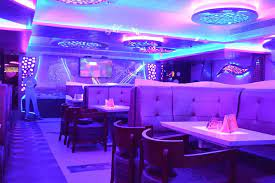
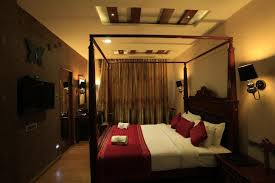
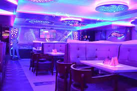
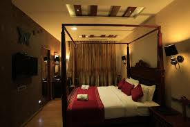

King's royal palace
Customer Reviews
Address: N Bypass Rd, Vannarpettai, Tirunelveli, Tamil Nadu 627003
Johnathan
Rating: ★★★★I recently had the pleasure of staying at this magnificent 5-star hotel and I must say, it was an unforgettable experience! From the moment I entered the lobby, I was greeted by the most welcoming staff I have ever encountered. The check-in process was swift and seamless, and I was immediately impressed by the elegance and grandeur of the hotel's interior. My room was nothing short of extraordinary. It was immaculately clean, spacious, and beautifully decorated. The bed was incredibly comfortable, ensuring a perfect night's sleep. The attention to detail was evident throughout, from the luxurious toiletries in the bathroom to the plush bathrobes provided. The hotel's amenities were exceptional. I thoroughly enjoyed the state-of-the-art fitness center, where I could maintain my workout routine while enjoying breathtaking views of the city skyline. The spa was a haven of tranquility, and the skilled therapists left me feeling rejuvenated and refreshed. Dining at the hotel was a culinary delight. The restaurants offered a diverse range of delectable dishes, prepared with the finest ingredients. The service was impeccable, and the sommelier's recommendations were spot-on. Each meal was a gastronomic adventure that exceeded my expectations. I cannot praise the staff enough for their professionalism and attentiveness. Every request was met with a smile, and they went above and beyond to ensure my stay was flawless. The level of service provided was truly exceptional and left a lasting impression. In conclusion, this 5-star hotel surpassed all my expectations. From the luxurious accommodations to the outstanding amenities and impeccable service, it truly deserves its reputation as one of the finest hotels in the world. I wholeheartedly recommend it to anyone seeking an unforgettable stay. .
Emily clark
Rating: ★★★My recent stay at this 5-star hotel was an absolute dream. The moment I stepped foot into the lobby, I was blown away by the opulent decor and the warm welcome from the staff. The check-in process was quick and efficient, ensuring a seamless start to my vacation. The room I stayed in was sheer perfection. It was elegantly designed, exuding both comfort and luxury. The attention to detail was remarkable, from the high-quality linens to the carefully curated artwork adorning the walls. The breathtaking views from my room added an extra touch of magic to my stay. The hotel's facilities were top-notch. I thoroughly enjoyed lounging by the magnificent pool, soaking up the sun while sipping on refreshing cocktails. The spa treatments were a true indulgence, and the expert therapists left me feeling pampered and blissfully relaxed. Dining at the hotel was an exceptional experience. The on-site restaurants offered a wide array of culinary delights, catering to every palate. The presentation of the dishes was exquisite, and the flavors were simply divine. The attentive staff made every meal a memorable one. One of the highlights of my stay was the impeccable service. The staff members were friendly, professional, and always willing to go the extra mile to ensure my needs were met. Whether it was arranging transportation or providing recommendations for local attractions, they were knowledgeable and attentive. All in all, this 5-star hotel exceeded my expectations in every way. From the luxurious accommodations to the exceptional service and outstanding facilities, it truly provided a haven of indulgence and relaxation. I would highly recommend this hotel to anyone seeking a truly unforgettable experience. .
Roberpatingson
Rating: ★★★★I recently had the pleasure of staying at this 5-star hotel, and I must say, it was an absolute delight. From the moment I entered the lobby, I was enveloped in an atmosphere of elegance and sophistication. The hotel's interior design was tastefully done, creating a truly luxurious ambiance. My room was a haven of comfort and style. The attention to detail was evident in every aspect, from the plush bedding to the carefully selected furnishings. The room boasted modern amenities, and the stunning city views from my window were a sight to behold. The hotel's facilities were outstanding. The fitness center was equipped with state-of-the-art equipment, allowing me to maintain my workout routine during my stay. The spa offered a range of indulgent treatments, and the skilled therapists provided a truly relaxing experience. Dining at the hotel was a culinary journey. The restaurants offered a diverse selection of dishes, expertly prepared by talented chefs. The impeccable service and the elegant atmosphere made every meal a memorable one. What truly stood out during my stay was the exceptional service provided by the staff. From the moment I arrived, I was greeted with warmth and professionalism. The staff members were attentive, catering to my every need and ensuring that I had a truly enjoyable stay. In conclusion, this 5-star hotel exceeded my expectations. The luxurious accommodations, outstanding facilities, and attentive service combined to create a truly unforgettable experience. I would highly recommend this hotel to anyone seeking a refined and indulgent stay. .
stark
Rating: ★★★I recently had the pleasure of staying at this magnificent 5-star hotel, and I can confidently say it was an experience beyond compare. From the moment I walked through the doors, I was transported into a world of luxury and sophistication. The room I stayed in was a masterpiece. The elegant design and attention to detail created an atmosphere of opulence. The bed was incredibly comfortable, ensuring a restful sleep each night. The spacious bathroom featured high-end amenities that added an extra touch of indulgence. The hotel's facilities were second to none. The pool area was a serene oasis, perfect for unwinding and soaking up the sun. The well-equipped fitness center allowed me to maintain my workout routine while traveling. The hotel's spa provided a range of rejuvenating treatments that left me feeling revitalized. Dining at the hotel was a culinary delight. The restaurants offered a diverse selection of delectable dishes, each one a work of art. The attentive staff and the elegant ambiance made every meal a memorable experience. The level of service at this hotel was exceptional. The staff members were attentive, friendly, and always willing to assist. From the moment I arrived until the day of my departure, I felt like a valued guest. Every request was handled promptly and with a genuine desire to ensure my comfort. In summary, this 5-star hotel is a true gem. The luxurious accommodations, outstanding facilities, and impeccable service make it a standout choice for any discerning traveler. I would highly recommend this hotel to anyone seeking a truly extraordinary stay.
Sarah Johnson
Rating: ★★★My recent stay at this 5-star hotel was an absolute delight from start to finish. The moment I arrived, I was greeted by the friendly and attentive staff, who made me feel instantly welcome. The check-in process was smooth and efficient, setting the tone for a fantastic stay. The room I stayed in was a haven of luxury. The tasteful decor, comfortable furnishings, and breathtaking views created an atmosphere of tranquility. The attention to detail was remarkable, with little touches like fresh flowers and personalized amenities that made me feel truly pampered. The hotel's amenities were exceptional. The spa facilities were world-class, offering a range of treatments that left me feeling rejuvenated and relaxed. The fitness center was well-equipped, allowing me to maintain my workout routine while traveling. And the rooftop bar provided stunning panoramic views of the city, making it the perfect spot to unwind with a cocktail. Dining at the hotel was a culinary delight. The restaurants offered a variety of delicious dishes, prepared with the finest ingredients. The chefs showcased their talent and creativity, delivering exquisite flavors that delighted my taste buds. The attentive service added to the overall dining experience. The service provided by the staff was impeccable. Every staff member I encountered was friendly, professional, and went above and beyond to ensure my stay was perfect. From arranging transportation to providing recommendations for local attractions, they were always ready to assist with a smile. In conclusion, this 5-star hotel surpassed all my expectations. The luxurious accommodations, outstanding amenities, and exceptional service combined to create an unforgettable experience. I would highly recommend this hotel to anyone looking for a truly remarkable stay.
Book Now Back to home